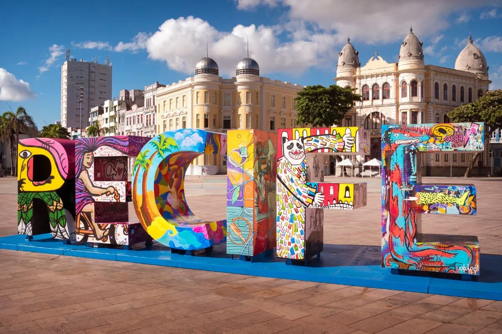

Celebrando o Orgulho Recifense: O Reconhecimento ao Novo Atacarejo
Empresários Daniel Costa e Victor Bretas Recebem Título de Cidadão Recifense na Câmara Municipal
É com imensa gratidão e um profundo senso de honra que nós, do Novo Atacarejo, compartilhamos a emocionante notícia de recebermos o título de Cidadão Recifense. Essa distinção, concedida pela respeitada Câmara Municipal do Recife, não apenas enaltece nossa trajetória empresarial, mas também simboliza um profundo reconhecimento à nossa dedicação ao desenvolvimento desta vibrante cidade.
Agora, mais do que nunca, sentimos um orgulho indescritível de fazer parte do tecido social e econômico do Recife. Essa honraria não é apenas uma conquista para nós como empresários, mas também um testemunho do nosso compromisso incessante com o progresso desta comunidade que tão generosamente nos acolheu.
Ao longo dos anos, o Novo Atacarejo tem se empenhado incansavelmente para não apenas fornecer produtos e serviços de qualidade, mas também para ser um agente de mudança positiva na vida dos recifenses. Acreditamos firmemente que o desenvolvimento econômico deve ser aliado ao bem-estar social, e é com essa convicção que buscamos contribuir para o crescimento sustentável da nossa cidade.
Essa distinção é um tributo não apenas à nossa empresa, mas também a cada colaborador que dedica seu tempo e energia para tornar o Novo Atacarejo um exemplo de excelência e compromisso comunitário. É um reconhecimento aos nossos parceiros comerciais, fornecedores e, acima de tudo, aos nossos clientes, que confiam em nós diariamente para suprir suas necessidades.
Ao receber o título de Cidadão Recifense, renovamos nosso compromisso de continuar servindo esta cidade com integridade, empreendedorismo e uma dedicação inabalável ao seu bem-estar. Este é apenas o começo de uma jornada contínua de colaboração e crescimento mútuo, e estamos ansiosos para as muitas oportunidades que o futuro reserva.
Agradecemos sinceramente à Câmara Municipal do Recife por este honroso reconhecimento, e prometemos continuar honrando a confiança e o apoio da comunidade recifense. Muito obrigado, Recife, por nos permitir fazer parte da sua história e por nos inspirar a sermos melhores a cada dia.